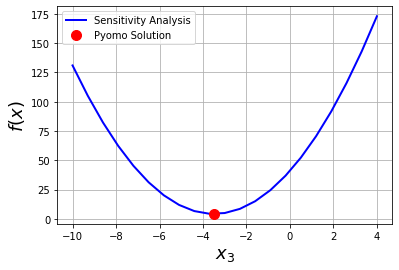

Your First Optimization Problem
Contents
1.1. Your First Optimization Problem¶
Let’s solve your first optimization problem in Pyomo.
1.1.1. Cloud Computing with Google Colab¶
We will include the following code at the top of our notebooks to configure Google Colab.
## Tip: Please put code like this at the top of your notebook.
# We want all of the module/package installations to start up front
import sys
if "google.colab" in sys.modules:
!wget "https://raw.githubusercontent.com/ndcbe/optimization/main/notebooks/helper.py"
import helper
helper.install_idaes()
helper.install_ipopt()
What does this code do? If we run it on Google Colab, the code first downloads helper.py. This small utility then helps us install Pyomo and the needed solvers (often via IDAES).
1.1.2. Mathematical Model¶
Let’s start with a purely mathematical example:
We want to solve the constrained optimization problem numerically.
1.1.3. Define the Model in Pyomo¶
Note
Activity: Fill in the missing constraint.
import pyomo.environ as pyo
# Create instance of concrete Pyomo model.
# concrete means all of the sets and model data are specified at the time of model construction.
# In this class, you'll use a concrete model.
m = pyo.ConcreteModel()
## Declare variables with initial values with bounds
m.x1 = pyo.Var(initialize=1, bounds=(-10, 10))
m.x2 = pyo.Var(initialize=1, bounds=(-10, 10))
m.x3 = pyo.Var(initialize=1, bounds=(-10, 10))
## Declare objective
m.OBJ = pyo.Objective(expr=m.x1**2 + 2*m.x2**2 - m.x3, sense = pyo.minimize)
## Declare equality constraints
m.h1 = pyo.Constraint(expr= m.x1 + m.x2 == 1)
# Add your solution here
## Display model
m.pprint()
3 Var Declarations
x1 : Size=1, Index=None
Key : Lower : Value : Upper : Fixed : Stale : Domain
None : -10 : 1 : 10 : False : False : Reals
x2 : Size=1, Index=None
Key : Lower : Value : Upper : Fixed : Stale : Domain
None : -10 : 1 : 10 : False : False : Reals
x3 : Size=1, Index=None
Key : Lower : Value : Upper : Fixed : Stale : Domain
None : -10 : 1 : 10 : False : False : Reals
1 Objective Declarations
OBJ : Size=1, Index=None, Active=True
Key : Active : Sense : Expression
None : True : minimize : x1**2 + 2*x2**2 - x3
2 Constraint Declarations
h1 : Size=1, Index=None, Active=True
Key : Lower : Body : Upper : Active
None : 1.0 : x1 + x2 : 1.0 : True
h2 : Size=1, Index=None, Active=True
Key : Lower : Body : Upper : Active
None : 5.0 : x1 + 2*x2 - x3 : 5.0 : True
6 Declarations: x1 x2 x3 OBJ h1 h2
1.1.4. Solve using Ipopt¶
Toward the end of the semester we will learn, in perhaps more detail than you care, what makes Ipopt work under the hood. For now, we’ll use it as a computational tool.
opt1 = pyo.SolverFactory('ipopt')
status1 = opt1.solve(m, tee=True)
Ipopt 3.13.2:
******************************************************************************
This program contains Ipopt, a library for large-scale nonlinear optimization.
Ipopt is released as open source code under the Eclipse Public License (EPL).
For more information visit http://projects.coin-or.org/Ipopt
******************************************************************************
This is Ipopt version 3.13.2, running with linear solver ma27.
Number of nonzeros in equality constraint Jacobian...: 5
Number of nonzeros in inequality constraint Jacobian.: 0
Number of nonzeros in Lagrangian Hessian.............: 2
Total number of variables............................: 3
variables with only lower bounds: 0
variables with lower and upper bounds: 3
variables with only upper bounds: 0
Total number of equality constraints.................: 2
Total number of inequality constraints...............: 0
inequality constraints with only lower bounds: 0
inequality constraints with lower and upper bounds: 0
inequality constraints with only upper bounds: 0
iter objective inf_pr inf_du lg(mu) ||d|| lg(rg) alpha_du alpha_pr ls
0 2.0000000e+00 3.00e+00 3.33e-01 -1.0 0.00e+00 - 0.00e+00 0.00e+00 0
1 4.3065612e+00 1.11e-16 2.89e-01 -1.0 4.36e+00 - 6.72e-01 1.00e+00h 1
2 4.2501103e+00 0.00e+00 5.55e-17 -1.0 1.31e-01 - 1.00e+00 1.00e+00f 1
3 4.2500000e+00 0.00e+00 4.32e-16 -2.5 6.02e-03 - 1.00e+00 1.00e+00f 1
4 4.2500000e+00 8.88e-16 1.14e-16 -3.8 4.41e-05 - 1.00e+00 1.00e+00f 1
5 4.2500000e+00 0.00e+00 3.13e-16 -5.7 1.98e-06 - 1.00e+00 1.00e+00h 1
6 4.2500000e+00 0.00e+00 1.55e-16 -8.6 2.45e-08 - 1.00e+00 1.00e+00f 1
Number of Iterations....: 6
(scaled) (unscaled)
Objective...............: 4.2500000000000000e+00 4.2500000000000000e+00
Dual infeasibility......: 1.5452628521041094e-16 1.5452628521041094e-16
Constraint violation....: 0.0000000000000000e+00 0.0000000000000000e+00
Complementarity.........: 2.5059105039901454e-09 2.5059105039901454e-09
Overall NLP error.......: 2.5059105039901454e-09 2.5059105039901454e-09
Number of objective function evaluations = 7
Number of objective gradient evaluations = 7
Number of equality constraint evaluations = 7
Number of inequality constraint evaluations = 0
Number of equality constraint Jacobian evaluations = 7
Number of inequality constraint Jacobian evaluations = 0
Number of Lagrangian Hessian evaluations = 6
Total CPU secs in IPOPT (w/o function evaluations) = 0.002
Total CPU secs in NLP function evaluations = 0.000
EXIT: Optimal Solution Found.
1.1.5. Inspect the Solution¶
Now let’s inspect the solution. We’ll use the function value() to extract the numeric value from the Pyomo variable object.
## Return the solution
print("x1 = ",pyo.value(m.x1))
print("x2 = ",pyo.value(m.x2))
print("x3 = ",pyo.value(m.x3))
print("\n")
x1 = 0.4999999999666826
x2 = 0.5000000000333175
x3 = -3.499999999966682
1.1.6. Visualize the Solution¶
Is our answer correct?
We can solve this optimization problem with guess and check. If we guess \(x_3\), we can then solve the constraints for \(x_1\) and \(x_2\):
We can then evaluate the objective. Let’s see the graphical solution to our optimization problem.
Note
Activity: Verify you agree with how to translate the two linear constraints into a linear system of questions.
import numpy as np
import matplotlib.pyplot as plt
def constraints(x3):
''' Solve the linear constraints
Args:
x3: Value for the decision variable x3
Returns:
x1 and x2: Values calculated from the constraints
'''
# Define the matrices in the above equations
A = np.array([[1, 1],[1, 2]])
b = np.array([1, 5+x3])
# Solve the linear system of equations
z = np.linalg.solve(A,b)
x1 = z[0]
x2 = z[1]
return x1, x2
# Define a lambda function to plot the objective
objective = lambda x1, x2, x3: x1**2 + 2*x2**2 - x3
# Guess many values of x3.
x3_guesses = np.linspace(-10,4,21)
obj = []
for x3 in x3_guesses:
# Solve the constraints to determine x1 and x2
x1, x2 = constraints(x3)
# Calculate the store the objective function value
obj.append(objective(x1,x2,x3))
# Plot the objective function value versus x3
plt.plot(x3_guesses, obj,color='blue',linewidth=2,label="Sensitivity Analysis")
plt.xlabel("$x_3$",fontsize=18)
plt.ylabel("$f(x)$",fontsize=18)
# Plot the solution from Pyomo
x3_sln = pyo.value(m.x3)
obj_sln = pyo.value(m.OBJ)
plt.plot(x3_sln, obj_sln,marker='o',color='red',markersize=10,label="Pyomo Solution",linestyle='')
plt.legend()
plt.grid(True)
plt.show()
